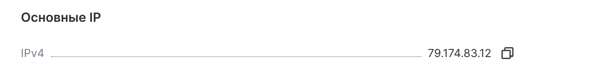
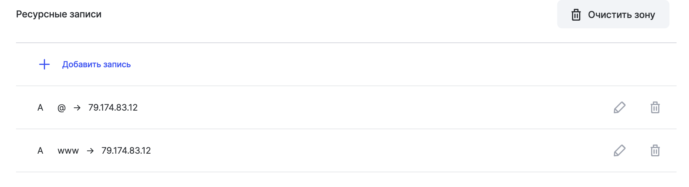
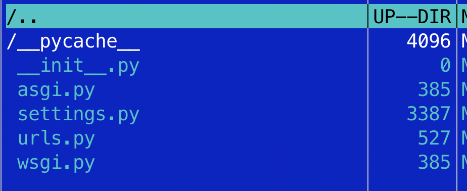

Deploy Django project to vps server
пояснения
- Здесь рассматривается запуск проекта на vps сервере разработанного на django со стандартной базой данных sqlite3.
- Покупаем сервер и приступаем к его настройке
- Поработаем с ssh
- Настроим пользователя root
- Добавим нового пользователя. Переключимся на него и уже все настройки будем производить через него
- Установка и настройка Nginx
- Клонируем проект
- Установим gunicorn
- Установим пакеты для работы с django
- Научимся подключать к нашему домену ssl сертификат
#Ресурсные записи -> домен -> сервер
после покупки сервера мы связываем доменное имя с нашим сервером, данные по работе с сервером приходят на указанную вами почту или их можно взять в личном кабинете сервиса в котором покупался сервер 
настроить ресурсные записи в regru- Позволит соединить доменное имя с купленным сервером
заходим в регру, выбираем доменное имя, изменить ресурсные записи, добавляем ip нашего сервера:
в запись @и в www
ssh
Сгенерировать ключ
Вывести ключ в терминал
Скопировать ключ на удаленный сервер
После ввода команды, введите пароль (не будет отображаться) и нажмите ENTER. Утилита скопирует содержимое открытого ключа (~/.ssh/id_rsa.pub) на удаленный сервер в файл authorized_keys.
Если соединение быстро обрывается можно использовать эту команду
Зайти на сервер по ssh
Обновите список пакетов
sudo apt update
Учетные записи
меняем пароль пользователя ROOT
при вводе символы не отображаются — нет ни букв, ни цифр, ни звездочек, это нормально, введи новый пароль и нажми Enter
добавить учетную запись
следуйте инструкциям, чтобы установить пароль и заполнить другую информацию
добавить права суперпользователя для пользователя coder
добавьте пользователя coder в группу sudo, используя команду
проверьте, что пользователь добавлен в группу sudo, выполните команду
#Установка программ
Установите git
git --version- проверить установлен ли git
MCeditor
Midnight Commander — один из файловых менеджеров с текстовым интерфейсом типа Norton Commander для UNIX-подобных операционных
Установите Nginx
sudo apt install nginx
Полезные команды Nginx
Склонировать проект
перейти в папку www
склонировать сюда проект например мой стартовый шаблон блога django с админкойпроблема с клонированием / Permission denied
Ошибка "Permission denied" при клонировании репозитория Git может возникнуть из-за недостаточных прав доступа к директории, в которую вы пытаетесь склонировать проект. В данном случае, вам не хватает прав на запись в директорию, где вы пытаетесь выполнить клонирование.Для решения этой проблемы вам следует убедиться, что у вас есть достаточные права доступа к директории /var/www/ или создать новую директорию, куда вы сможете клонировать проект. Вы можете выполнить следующие шаги:
Убедитесь, что у вас есть права на запись в директорию /var/www/. Для этого выполните команду:
Если у вас нет прав на запись в эту директорию, выполните команду для изменения прав доступа:
Убедитесь, что пользователь coder имеет права на запись в директорию /var/www/
Вы можете изменить права доступа с помощью команды
#Django
Ставим нужные пакеты
sudo apt install gcc python3 python3-pip python3-dev curl -y
Проверьте успешность установки с помощью
Установка виртуальной среды Python
Создайте виртуальную среду в этой директории
Важно
- Убедиться что находимся в папке проекта, например по этому пути /var/www/django_project
- Следующие действия необходимо выполнять в папке вашего проекта
- удалить папку venv
если папка venv не была добавлена в gitignore вполне возможно что она уже будет после клонирования репозитория
установим пакет
*python3 -m venv venv - создание виртуальной среды Python с помощью модуля venv. virtualenv - Это инструмент, который позволяет создавать изолированные среды Python, где каждая среда может иметь свои собственные зависимости и пакеты. venv - Это встроенный модуль Python, начиная с версии 3.3, который также используется для создания виртуальных сред Python. Оба метода - использование python3 -m venv venv и virtualenv venv - позволяют создавать виртуальные среды Python, но различаются в том, как они это делают. Важно отметить, что использование venv является более современным подходом, так как это встроенный инструмент Python, в то время как virtualenv требует установки отдельного пакета.
Активируйте виртуальную среду
Установка модулей или пакетов вашего django приложения
Запуск сервера
(временная мера - просто для проверки). Ниже настроим gunicorn
скорее всего сайт откроется с ошибкой, нужно внести тестовые доступы в settings.py в блок ALLOWED_HOSTS 
добавить ip сервера и домен
Создать папку static
Cобираем статические файлы
#Настройка Gunicorn
в виртуальном окружении выполнить команду (venv)

Проверить установился ли gunicorn
создать файл сокета gunicorn
Наполнить этими данными
[Unit]
Description=gunicorn socket
[Socket]
ListenStream=/run/gunicorn.sock
[Install]
WantedBy=sockets.target
создать файл для службы
рабочий вариант(myproject_django - замените на свою папку проекта)
Важно
- В блоке [Service] заменить в строках User и Group свои значения
- Поставить пользователя и группу от которого будет запускаться сервис
- В нашем случае
- User=coder
- Group=coder
- Как узнать текущего пользователя и его группы?
whoami- пользователь- Другие команды:
cat /etc/passwd- информация об учетных записях пользователейcat /etc/group- группы
[Unit]
Description=gunicorn daemon
Requires=gunicorn.socket
After=network.target
[Service]
User=coder
Group=coder
WorkingDirectory=/var/www/myproject_django/
ExecStart=/var/www/myproject_django/venv/bin/gunicorn \
--access-logfile - \
--workers 3 \
--bind unix:/run/gunicorn.sock \
base.wsgi:application
[Install]
WantedBy=multi-user.target
Активировать сокет
Активируем службу gunicorn
Узнаем статус службы
Внеся изменения в файлы делаем перезагрузку
Настройка nginx. Добавить файл в nginx каталог
myproject_django - придумайте свой вариант или используйте название папки вашего проекта
добавляем в файл /etc/nginx/sites-available/myproject_django эти данные (ставим свой домен в строку server_name)
Перегрузите nginx
проверим конфигурацию nginx
изменить настройки нашего проекта django
нужно внести доступы в settings.py в блок ALLOWED_HOSTS
добавить домен + домен с www
restart gunicorn
Создаем симлинк nginx конфиг нашего проекта
myproject_django - замените на название вашего проекта
Перегрузите nginx
другое
другие полезные команды
#Letsencrypt - ssl
Подключение сертификата ssl
выпуск ssl
- вводим свой емейл
y- соглашаемся с инструкциейвыпустить ssl сертификат- по настройке nginx будет предложено выпустить ssl для домена с www и без www1 2- вводим цифры через пробел
на этом этапе выпуск сертификата ssl для проекта на django завершен
The end
https://letsencrypt.org/ru/-
https://certbot.eff.org/ -
выбираем nginx и ubuntu20 -
Install snapd https://snapcraft.io/docs/installing-snapd
-
Install Certbot -
- вводим емейл - y (соглашаемся)- вводим наш домен (example.com) - пишите свой домен
Commands
python manage.py clear_cache- Чтобы очистить кеш в Django, вы можете использовать команду управления clear_cache. Для этого выполните следующую команду в вашем терминале: